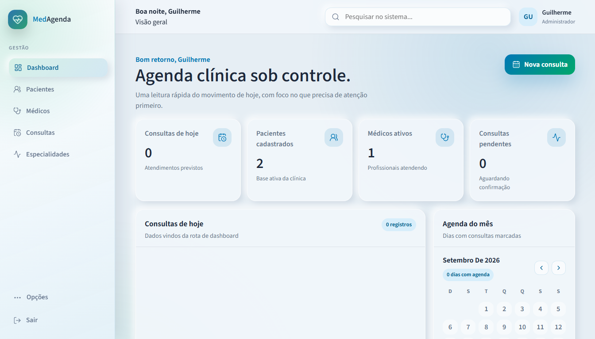

02 / WEB APP
↗Med Agenda
Sistema web de gestão de clínicas médicas.
GESTÃOSAÚDETREINAMENTO
Uma seleção de sistemas, plataformas e experiências digitais desenvolvidas para projetos nacionais e internacionais. Novos trabalhos entram aqui conforme são publicados.
06 PROJETOS PUBLICADOS